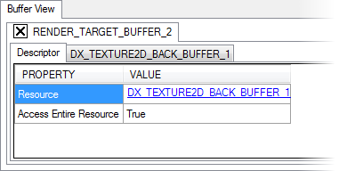

The "Buffer View" window of the Scrubber DX displays detailed information about a DirectX object.

Basic usage:
• Capture a frame from the connected application, and select a draw call in the DrawCalls pane. The "API Calls" tab will list all API calls made between the selected draw call and the previous draw call.
• Click on a hyperlink in an API call to display additional information about the selected element in the Buffer View pane. DirectX resources, state objects, etc... can all be examined.
• Click on a hyperlink in the Buffer View pane to display even more information about the object being examined. For example, a render target view is generally created with a Texture2D resource as its target. Examining a render target view will expose the resource in the Buffer View, allowing you to view the details of the Texture2D object, such as the width, height, and texture format.